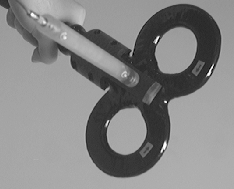
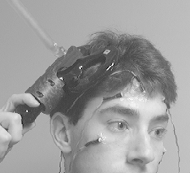

|

|
Guidage de la TMS
|

|
Cette page est pour l'instant dédiée au protocole de J.-L. Martinot
sur l'utilisation de la TMS dans la prise en charge de la dépression.
Cette page n'est pas à jour.
Il s'agit donc d'une recette. Le but est de positionner la spire
de la TMS de manière à viser une région d'hypométabolisme
frontal mise en évidence par TEP (FDG).
Marche à suivre pour un nouveau sujet
- Examen IRM anatomique sur le SIGNA 1.5T: séquence inversion/récupération,
coupes fines (124 coupes 256*256);
- Examen TEP FDG;
- Recalage TEP/IRM avec la plateforme MMMP: scénario FDG_2_IRMT1_BRAIN3D
(ce scénario extrait le cerveau de l'IRM et de l'images TEP/FDG pour
effectuer un recalage sur la surface du cerveau);
- Rééchantillonage de l'image FDG avec la commande VipSplineResamp de manière à la
superposer à l'image anatomique (si mmmp ne s'en est pas chargé);
- Normalisation de l'image IRM-T1 avec SPM par rapport au template
anatomique standard;
- Appliquer les paramètres de la normalisation à l'image FDG recalée;
- Comparaison de l'image FDG individuelle au pool de témoins normalisés
par le passé en suivant la même procédure; Cette comparaison
permet d'obtenir une image indiquant les régions hypo-métaboliques
statistiquement significatives. Il faut alors sauver le résultat
en utilisant le bouton write de SPM. Je propose d'appeler
le resultat hypometabolism pour simplifier la suite.
- Obtention des maillages de la tête et du cerveau avec
la moulinette AnaGetBrainAndHeadMesh
exemple: AnaGetBrainAndHeadMesh S0XXXX_002
Si tout se passe bien, vous recuperez:
S0XXXX_002_brain.mesh et S0XXXX_002_head.mesh
- Importation de la normalisation dans le format d'Anatomist avec la
moulinette AnaImportSPMsn3dFile
Exemple: AnaImportSPMsn3dFile S05053_002
Si tout se passe bien, vous recuperez:
nS05053_002_TO_S05053_002 et S05053_002_TO_nS05053_002
- Si vous etes a l'aise avec anatomist, vous pouvez alors regarder les
données sur l'anatomie individuelle pour choisir la cible
et les points de repères nécessaires pour le repérage. Pour vous
aider, il existe un scenario tout fait qui permet de mettre
les données facilement dans de bonnes conditions de visualisation. Pour l'instant,
il faut editer ce scenario à la main pour adapter les noms a ceux
de votre examen. Si vous ne l'avez jamais fait, tapez la commande
script-mime-ana. Ensuite, vous pourrez tester ce scenario en cliquant la:
Anatomist
.
Vous pouvez egalement recuperer le fichier "/home/Panabase/tools/TMS_target_choice.ana"
pour faire vos modifications. Il vous faut alors produire un fichier
landmarks équivalent à:
nasion: 108.897 21.9874 82.6053
vertex: 109.109 135.674 -0.6
inion: 113.088 208.027 135.356
og: 187.451 123.467 120.88
od: 37.3184 126.492 126
target: 133.501 36.2227 55.7427
Aidez vous de la fonctionnalité d'Anatomist qui permet de chercher le point le plus proche à
la surface de la tête.
- Lorsque vous avex terminé cette opération, il reste à calculer la localisation
du système de référence 10/20 avec la commande:
AimsTMStarget-dev -i S0XXXX_002_head.mesh -l landmarks -o 10-20.
- La commande précédente vous spécifie la distance géodésique aux deux lignes
de référence et crée le fichier 10-20.tex. Chargez le dans Anatomist et fusionnez
le avec S0XXXX_002_head.mesh. Placez le résultat de la fusion dans une fenêtre
3D. En jouant avec la table de couleur vouz verrez apparaître la cible...
Vous pouvez sauver les images au format jpg pour les utiliser pendant la
mise en place du bonnet de bain et de la spire.

|
|
|